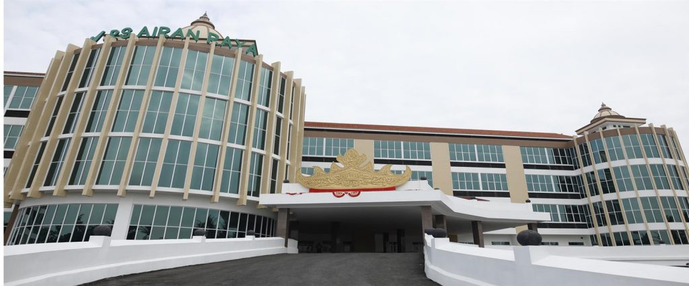

Selamat Datang di Rumah Sakit Airan

Visi
“Visi Rumah Sakit Airan Raya adalah Menjadi Rumah Sakit Terdepan Dalam Memberikan Pelayanan Kesehatan Yang Bermutu di Lampung”
--------------------
Misi
Melaksanakan Seluruh Pelayanan Kesehatan Yang di Berikan Sesuai Dengan Standar Mutu Pelayanan;
Membangun Pelayanan Kesehatan Dengan Sistim Informasi Management Yang Terintegritas;
Menciptakan Budaya Kerja Rumah Sakit Mengutamakan Mutu dan Kesehatan Pasien;
Membangun Sumber Daya Melalui Pendidikan dan Pelatihan Yang Berkesinambungan.
--------------------